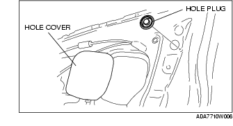
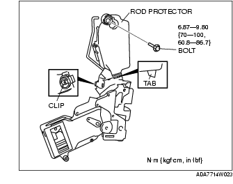

1. Fully roll up the front door glass.
2. Remove the hole cover and hole plug.

3. Remove the bolt.

4. Insert hand through the hole, disconnect the clip from the front door latch.
5. Disconnect the tab.
6. Remove the rod protector.
7. Install in the reverse order of removal.